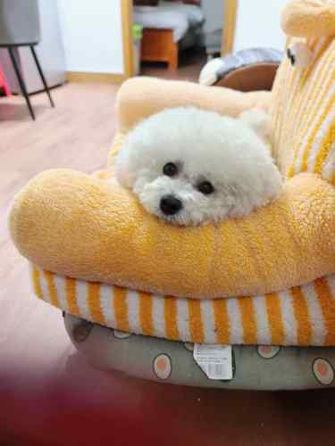
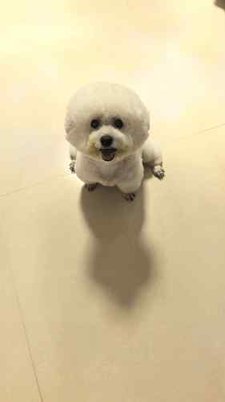
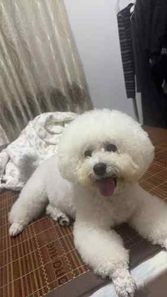
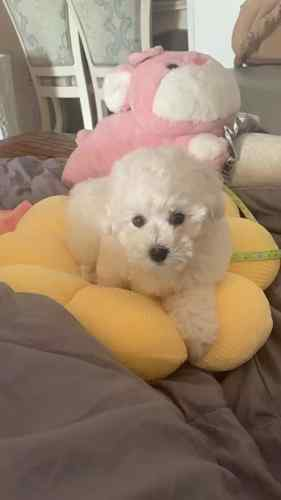

NIANGAO · LITTLE MOMENTS, BIG LOVE
日子軟軟的，
因為有年糕。
一隻比熊，一本慢慢寫的生活日記。
選一個主題，打開年糕的一整面小世界。
點擊上方板塊開始探索

一小團柔軟
一大份陪伴 ♡
一大份陪伴 ♡
一隻比熊，一本慢慢寫的生活日記。
選一個主題，打開年糕的一整面小世界。

先看總覽，再打開想看的內容



狗糧和零食 · 年糕玩具 · 年糕洗澡
梳毛與美容 · 散步與外出 · 健康與日常
「今天也要好好吃飯、好好睡覺，然後把可愛留給每一個遇見我的人。」
用品、週期、吹毛和洗完澡後的小表情。
年糕出生於 2021 年 6 月 1 日，是一隻白白軟軟的比熊。
收藏生活裡的小表情，點開照片慢慢看。
把重要的小事一格一格留下來，慢慢看見年糕長大的樣子。
之後每篇可以放日期、照片、影片、生活故事和主題標籤。
把實際照顧年糕的經驗分類整理，也分享給其他養狗的朋友。
點擊上面的分類，查看年糕的用品、習慣和照顧紀錄。